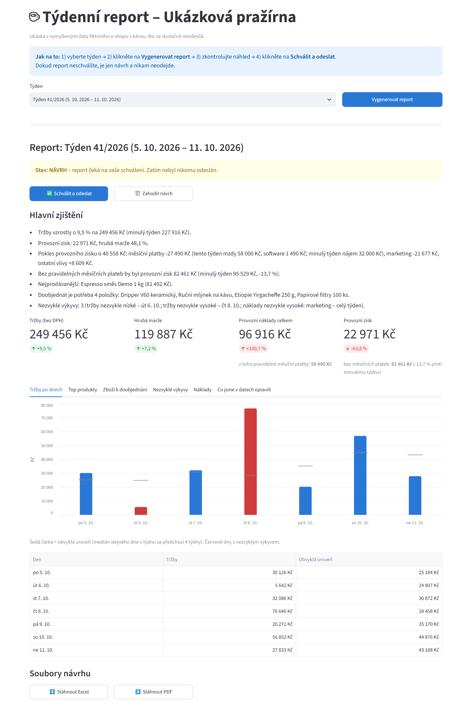
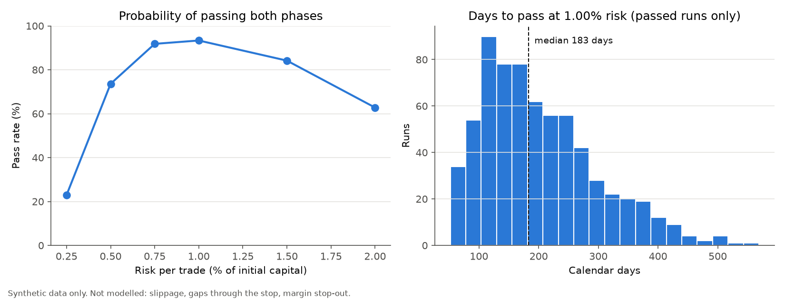

Týdenní report pro malou firmu
Funkční ukázka na vymyšlených datech fiktivního e-shopu s kávou. Kód je veřejně na GitHubu.
Automatizace a reporty v Pythonu pro malé firmy
Pomáhám malým firmám, které mají čísla rozházená v exportech z e-shopu, ručně vedených tabulkách a skladových souborech a každý týden je někdo pracně skládá dohromady. Připravím automatický report, který data sám načte, vyčistí (sjednotí formáty, opraví překlepy, vyřadí duplicity) a zapíše, co přesně upravil. Výsledkem je přehled na jednu stránku: tržby, náklady, marže, co dochází na skladě a co se v daném týdnu chovalo neobvykle – v Excelu i v PDF. Ovládá se jedním tlačítkem a nic neodejde, dokud report neschválíte.
Řešení stavím na vašich stávajících souborech, takže nemusíte měnit systémy ani zvyky. Na vašich datech ho nejdřív pustíme souběžně s ručním postupem, abyste viděli, že čísla sedí.

Funkční ukázka na vymyšlených datech fiktivního e-shopu s kávou. Kód je veřejně na GitHubu.

Simulace na vymyšlených (syntetických) datech: spočítá, s jakou pravděpodobností a za jak dlouho by zvolená pravidla splnila podmínky zkušebního období prop firmy. Místo jediného čísla ukáže i míru nejistoty, takže je vidět, jestli dobrý výsledek není jen náhoda. Ukázka práce s daty, simulacemi a automatickými testy.
V týdnu 41/2026 klesl provozní zisk o 64 %. Report ale pokles rozložil: většinu způsobilo načasování pravidelných plateb (tento týden mzdy, minulý týden nájem). Zisk bez nich klesl jen o 13,7 %, hlavně kvůli drahé marketingové kampani. Majitel tak nevidí jen číslo, ale i důvod.
Jde o vymyšlená data fiktivní firmy, ne o reálného klienta.
Report je jen jedna z věcí, které dělám. Pokud máte podobný problém, napište mi.
Napíšete mi, jak dnes sestavujete týdenní nebo měsíční přehled. Řeknu vám, jestli a jak to jde zautomatizovat, a navrhnu rozsah.
Předem se shodneme, co přesně dostanete: které zdroje dat, jaký výstup a kdo ho schvaluje. Cena je pevná za dohodnutý rozsah, žádné překvapení na konci.
Řešení stavím na vašich stávajících souborech. Několik týdnů běží souběžně s vaším ručním postupem, abyste viděli, že čísla sedí.
Když výsledky potvrdíte, předám vám řešení a ukážu, jak se používá. Report se nikdy neodešle, dokud ho nezkontrolujete a neschválíte.
Po předání opravuji chyby po dobu dohodnutou předem. Potom si můžete domluvit pravidelnou údržbu, nebo mě oslovit podle potřeby.
Data zůstávají u vás. Bez vašeho souhlasu je nikomu nepředávám.
Používám AI nástroje, ale každé řešení sám navrhuji, kontroluji a testuji. Hotový report počítá sám a nepotřebuje AI ani internet.
Napište mi, jak dnes sestavujete týdenní nebo měsíční přehled, a řeknu vám, jestli a za kolik to půjde zautomatizovat.